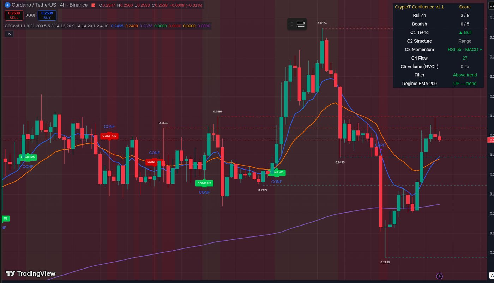

Ce que c'est
CryptoT Confluence est un indicateur TradingView original, conçu pour les gens qui apprennent et qui veulent lire un graphique comme les analystes expérimentés : la structure d'abord, le momentum ensuite, et une confirmation avant toute action. Un signal plein n'apparaît que lorsque 4 composantes sur 5 s'alignent dans le sens de la tendance — et, depuis la v1.1, seulement dans le contexte de régime que l'audit historique a réellement validé. Le reste du temps, le score vous dit la chose la plus utile qu'un débutant puisse entendre : pas encore.
Il a été créé par Dimitri « Dim » Jutras, l'éducateur derrière CryptoT — de l'éducation crypto quotidienne en français et en anglais, et le Guide de démarrage Power 5. L'indicateur encode simplement la discipline enseignée sur la chaîne : plusieurs confirmations, aucun pari au levier, n'arrêtez jamais d'apprendre.

Les cinq composantes
C1 — Tendance : la position du prix par rapport aux moyennes mobiles rapide et lente. Aucun signal ne part jamais contre la tendance dominante — c'est aussi le filtre dur : aucun alignement d'achat ne peut se déclencher sous la moyenne lente.
C2 — Structure : la séquence des sommets et creux confirmés (sommets et creux ascendants, ou le miroir). Elle dessine aussi les niveaux de support et de résistance automatiques à partir de ces mêmes pivots — calculés, jamais dessinés à la main.
C3 — Momentum : le RSI et l'histogramme MACD doivent s'entendre avant de voter. Il confirme; il ne prédit pas.
C4 — Flux : un composite de formules publiques et publiées (MFI, RSI recentré, stochastique recentré, de −100 à +100) qui pose une seule question : est-ce que l'argent suit vraiment le mouvement ?
C5 — Volume : un point de confirmation accordé seulement si la participation (le volume relatif, RVOL ≥ 1,2) est au rendez-vous. Un mouvement sans volume ne mérite pas le point.
La couche régime — pourquoi le contexte décide
La première version de cet indicateur scorait l'alignement, point. Notre audit historique (résultats complets ci-dessous) a montré que le même alignement signifie des choses opposées selon la position du prix par rapport à son EMA 200 — la v1.1 qualifie donc chaque événement par le régime :
Signal d'ACHAT plein (« CONF ») — alignement d'achat avec le prix au-dessus de l'EMA 200 : le territoire de la continuation de tendance, le contexte validé par l'audit sur le timeframe quotidien.
Signal de VENTE plein (« CONF ») — alignement de vente qui casse alors que le prix est encore au-dessus de l'EMA 200 : une rupture précoce, le deuxième contexte validé.
« REBOND » — observation seulement. Un alignement d'achat sous l'EMA 200 est un rebond contre-tendance, pas un signal d'achat. Historiquement, son issue médiane à 20 bougies était négative (voir l'audit) — l'indicateur l'étiquette pour que vous l'observiez, pas pour que vous le poursuiviez.
« CAPITULATION » — évitement. Un alignement baissier complet à l'intérieur d'une tendance baissière établie a marqué l'épuisement plus souvent que la continuation dans l'audit — vendre ou shorter là, c'était se placer devant des rebonds violents. L'indicateur avertit au lieu de signaler.
Un cooldown anti-écho (10 bougies par direction) empêche aussi le même signal de repartir bougie après bougie : dans la version brute, environ 70 % des signaux étaient des échos du précédent; en v1.1, cette part est réduite à environ 45 %.
Lire le score
0–2 / 5 — Du bruit. Les lectures se contredisent ou sont surtout neutres. Ne rien faire. C'est le cas la plupart du temps — et c'est le but.
3 / 5 — Alignement partiel. Ça mérite un œil. Regardez les niveaux de support/résistance automatiques à proximité.
4–5 / 5 — Alignement fort. La seule zone où un signal plein peut apparaître, lorsque le régime le qualifie — la décision reste la vôtre, avec votre propre plan de risque.
Utilisation recommandée : le quotidien (1D) pour décider la direction, le 4H pour surveiller le setup. Sous 1H : non recommandé — l'indicateur a été conçu pour une lecture 4H/1D, pas pour le scalping.
L'audit — ce que les chiffres disent
Avant de publier cet outil, nous avons rejoué ses règles exactes sur des données historiques et mesuré ce qui s'est passé après chaque signal. Cette section publie les résultats — y compris les parties qui ne flattent personne. C'est l'entente : des statistiques d'audit publiées, et leurs limites imprimées juste à côté.
Méthode. Audit réalisé le 10 octobre 2026 sur les données publiques d'OKX — bougies quotidiennes du 14 février 2022 au 9 octobre 2026, et bougies 4 heures du 3 août 2025 au 10 octobre 2026 — sur BTC, ETH, ADA, SOL et XRP. 1 820 événements journalisés; signaux confirmés à la clôture de la bougie seulement (aucun repeint par construction); un seul jeu de paramètres gelé, rien de réglé après coup. Issues mesurées sur les 5, 10 et 20 bougies suivantes. Aucuns frais, slippage ni taille de position : cet audit mesure le moment et le contexte des signaux, pas une stratégie de trading.
Les deux contextes qui ont tenu — timeframe quotidien, signaux pleins seulement :
| Signal plein (quotidien) | N | Ce que l'audit a mesuré |
|---|---|---|
| ACHAT, prix au-dessus de l'EMA 200 | 154 | Mouvement médian après 10 bougies : +1,15 % · moyenne après 20 bougies : +5,70 % · 52 % de clôtures positives |
| VENTE, rupture précoce (encore au-dessus de l'EMA 200) | 86 | Le mouvement favorable est arrivé en premier dans 52,3 % des courses ±3 % · mouvement médian après 20 bougies : +1,61 % dans le sens du signal |
Les limites — publiées exprès :
▸ Tous contextes confondus, la course ±3 % tient à peu près du pile ou face (ACHAT plein : 44,7 % favorable en premier contre 45,6 % adverse, baseline hasard 43,5 % / 47,6 %; VENTE pleine : 47,3 % contre 44,0 %, baseline 47,6 % / 43,5 %). Sur le timeframe 4H, les médianes restent près de zéro. Il n'y a aucun avantage de timing général dans ces chiffres — la valeur mesurée vit dans les deux contextes quotidiens ci-dessus, et dans le fait de savoir quels contextes éviter.
▸ Les contextes évités, mesurés : les étiquettes « REBOND » (alignement d'achat sous l'EMA 200, N = 428) ont eu une issue médiane à 20 bougies de −1,35 % — d'où observation seulement. Les étiquettes « CAPITULATION » sur le quotidien (N = 272) ont été suivies d'une excursion adverse médiane de −11,69 % — vendre là, c'était se placer devant les rebonds. D'où évitement.
▸ Les excursions coupent des deux bords : la pire excursion adverse médiane après un signal d'ACHAT plein quotidien atteignait environ −9 % sur 20 bougies. C'est ce fait mesuré qui explique pourquoi le guide inclus enseigne une invalidation dimensionnée à l'instrument — jamais un stop fixe de −3 %.
Un signal passé ne dit rien des résultats futurs. Ces statistiques décrivent comment cet outil précis s'est comporté sur une période historique définie, sur cinq marchés — rien de plus.
Accès et éducation (en $ US)
Deux choses différentes vivent sur cette page, et elles sont souvent confondues — les voici donc séparées : l'indicateur lui-même (construit et audité; sa publication publique sur TradingView est en préparation) et l'éducation sur la méthode (disponible dès maintenant). Rien sur cette page ne vend l'accès à l'indicateur — avant la publication publique, le script n'est disponible nulle part.